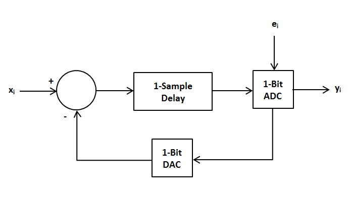
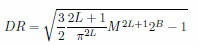
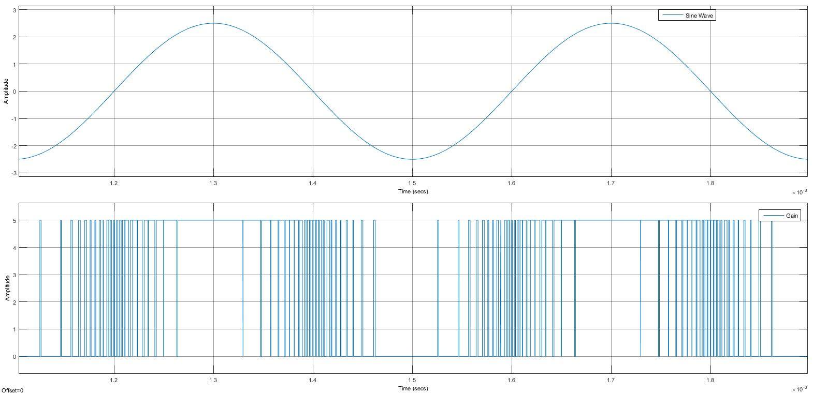
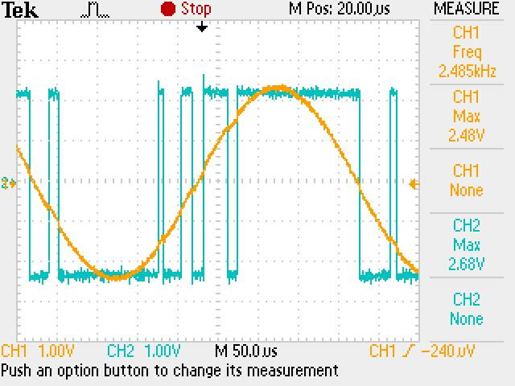

The delta-sigma modulator is a basic 1-bit sampling system responsible for digitizing an analog signal and reducing low-frequency noise. The modulator takes an input voltage and converts it to a stream of digital information where the ratio of ones and zeros represents the input analog voltage. Additionally, it uses an integrator to shape the quantization noise to higher frequencies.
The output of the 1-bit ADC is a 1-bit output code with the quantization noise of the converter where the quantization noise is equal to the current quantization noise, ei, minus the previous quantization noise, ei-1. For a first order modulator, the noise starts low at 0Hz and increases until it reaches its maximum at the modulator's sampling frequency fs. It would therefore follow that increasing the sampling frequency would decrease the in-band quantization noise. Increasing the order of the modulator by adding another differencer and integrator stage can also reduce the in-band quantization noise by making the output rely on additional error terms. The delta-sigma modulator is best suited to low-frequency sampling applications both because it relies on a high fs and because the low-frequency quantization noise is shifted into higher frequencies. The high-frequency noise result can be filtered out with a digital low-pass filter if the signal is low-frequency.
For an integrator with a 3dB cutoff frequency of 2.5kHz, set RC = 1/ωo. Letting R = 10kΩ gets a capacitor value of 6.6nF. The output of the integrator is attached to a comparator which functions as the 1-Bit ADC with the \ reference at ground. The comparator output is then attached to the D input of a flip-flop clocked at 640kHz with rails at ±2.5V. Because the output of the integrator is negative, rather than the positive gain shown in the block diagram above, the output of the difference should be Vf-Vi. The Q output of the DAC is attached to the positive input of the op-amp differencer.
Dynamic range is the ratio of the the signal to the noise floor and can be calculated with the equation below:
where B is the bits of the quantizer, L is the order of the modulator, and M is the oversampling ratio. In this instance, the delta-sigma modulator is sampling a 5kHz signal with 640kHz, so the oversampling ratio will be 128. This results in a dynamic range of 59.8054dB.
Simulating the block diagram with MATLAB Simulink produces the following result:
Running a 5kHz sine wave through the circuit produces the following result where input is in orange and output is in blue:
